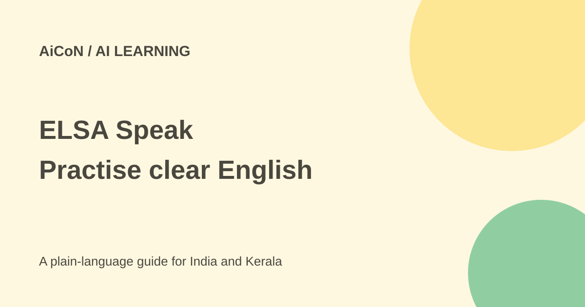

ELSA Speak: free pronunciation practice and trial cautions
ELSA Speak listens to spoken English and gives practice feedback. Start with its limited Free route, and read any trial or paid-plan screen before agreeing to a subscription.

What is ELSA Speak?
ELSA Speak is an English-speaking practice app. It listens to your speech and gives feedback on pronunciation. Its current website also describes AI roleplays and conversation practice. These can help you rehearse, but they do not guarantee fluent English, a job or an exam score.
The official FAQ gives Android and iPhone download routes. This article focuses on what a reader can try without treating every feature on the marketing page as part of the Free plan. Device, app version, region and current offer can change the screen you see.
Free, Pro and Premium are different
The official plan comparison says Free pronunciation access and lesson choices are limited. Pro includes the pronunciation coach and core lessons. Premium includes that base and fully unlocks advanced AI roleplays and the AI Conversation Coach.
The support article has a wording mismatch: its table labels some advanced features "Limited" on Free and Pro, while the explanatory text calls those advanced tools unavailable there. The safe expectation is that full open-ended conversation requires Premium. Check the actual app rather than assuming a particular free chat allowance.
What does the seven-day trial mean?
The FAQ advertises seven days of curriculum access with no payment or credit card required. However, another section on that same official FAQ warns that some app-store trials renew to a paid three-month subscription if not cancelled. These are not the same promise.
Do not assume every seven-day offer is a no-card, non-renewing trial. Read your specific screen for the trial end date, charge, billing period and cancellation route. A limited Free account, a promotional curriculum offer and a paid-plan subscription trial can have different rules.
How to start without rushing into payment
- Download through the official ELSA site or its linked app store.
- Choose a language and learning level you understand.
- Review microphone permissions and the account terms.
- Look for the limited Free route if that is what you want.
- Practise a short lesson in a quiet place.
- Listen to the model audio, speak naturally and check the feedback.
- Before accepting any trial or upgrade, read the price and renewal details.
The FAQ says a stable internet connection is needed. A noisy room or poor microphone can make feedback less useful. If a score seems wrong, try again in better conditions rather than treating one attempt as a final judgement of your speaking ability.
A useful practice routine
For an Indian learner, choose words or sentences you need for real conversations, study or work. Repeat the difficult sound, then practise it in a full sentence. Record and listen where the app supports that workflow. The goal is clear communication, not changing your identity or assuming every accent difference is a mistake.
AI feedback is one source of practice information. Pair it with real conversations, listening and feedback from a teacher or fluent speaker when possible. An app score is not an official English test result.
Price, renewal and cancellation
The checked public subscription page did not expose a reliable India checkout total. This guide therefore does not quote a universal price. Read the current app or checkout offer, including taxes, billing period and what it includes.
The FAQ says app-store subscriptions are managed through the relevant Apple or Google account. Deleting the app does not cancel a subscription. ELSA also warns that redeeming a voucher does not automatically cancel an existing app-store subscription. Check for overlapping purchases before adding another plan.
What changed since the original AiCoN post?
This article expands today's #AI94 post and narrows its no-card statement to the specific official FAQ offer. It also records the renewal warning and the mismatch in the advanced-feature table, so readers do not assume all trial routes or free chat limits are identical.
Frequently asked questions
Is every feature free?
No. Free practice is limited; full advanced conversation is a Premium feature.
Does deleting the app stop billing?
No. Cancel through the relevant subscription route.
Does a high score guarantee fluency?
No. Use it as practice feedback, not a guarantee.
Sources: Official ELSA site · Plan comparison · Official FAQ, trial and renewal · Public subscription page. Checked 7 October 2026.